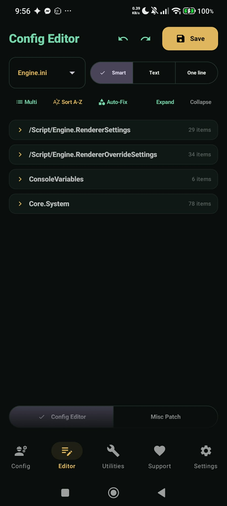
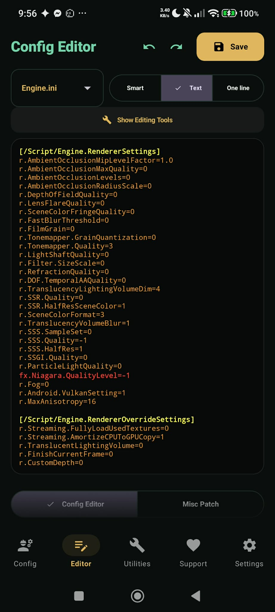
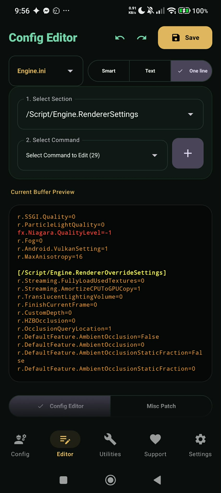

Live Config Editor Overview
The built-in Config Editor provides a flexible, mobile-optimized environment for modifying active Unreal Engine configuration files (Engine.ini, DeviceProfiles.ini, Scalability.ini, GameUserSettings.ini) directly on your device.
Target files are selected via the top-left file dropdown and read off device via ShizukuManager.readLogFile(). Files are cached in memory for 0ms sub-screen switching. Color coding: Gold for core INIs, Green for GameUserSettings.ini, and Gray for others.
Three Tailored Editing Modes



Detailed Editing Mode Breakdown
Structured Section Cards
- Sort A-Z Button: Re-arranges section headers in canonical engine order (
ConsoleVariables→SystemSettings→RendererOverrideSettings→RendererSettings→StreamingSettings→Core.Systemlast) and sorts CVars alphabetically. - Auto-Fix / Auto-Categorize Button: Re-categorizes CVars into canonical section headers, purges useless empty section headers, and deduplicates CVars within each section.
- Multi-Select & Bulk Delete: Enables checking multiple items in expanded sections and deleting them in a single batch.
- Steppers & Negative Numbers: Inline steppers with full negative number support.
- Disk-Persisted Undo & Redo: Dedicated header controls backed by
EditorHistoryManager.kt(persisting up to 40 snapshots incontext.filesDir) so history survives app kills or backgrounding without requiring Shizuku.
Manual Syntax-Highlighted Editor
- Isolation Search Mode: Filters raw text buffers to display only lines matching the search query.
- Search & Replace Toolbar: Features "Replace Next" and "Replace All" actions across large config files.
- Font Size Control: Adjustable slider from 8sp to 24sp for comfortable viewing.
Quick Single CVar Injection
- Dropdown selector for target section and CVar command.
- Interactive "Add CVar" and "Edit CVar" dialogs with real-time section guard validation notes.
- Live buffer preview card at the bottom displaying exact formatted output before saving.
Engine CVar Section Guards & Enforcement
To prevent game engine overrides and unread commands, the patcher enforces canonical Unreal Engine section placement rules across all editor views:
| Category | Canonical Section Header | Guard Rule & Prefix |
|---|---|---|
| Rendering Settings | [/Script/Engine.RendererSettings] |
Any CVar starting with r. (except r.SupportAllShaderPermutations). |
| Rendering Overrides | [/Script/Engine.RendererOverrideSettings] |
Accepts r.SupportAllShaderPermutations, any r. CVars, or dp. commands. Whitelisted during Auto-Fix. |
| Streaming Settings | [/Script/Engine.StreamingSettings] |
Any CVar starting with s.. |
| Garbage Collection | [/Script/Engine.GarbageCollectionSettings] |
Any CVar starting with gc.. |
| Network Settings | [/Script/Engine.NetworkSettings] |
n.VerifyPeer, p.EnableMultiplayerWorldOriginRebasing, NetworkEmulationProfiles. |
| Cooker Settings | [/Script/UnrealEd.CookerSettings] |
Any CVar starting with cook.. |
| Whitelisted Sections | [Core.Paths] / [Core.System] |
Paths and system settings are completely whitelisted and never flagged or moved. |
| Universal Container | [SystemSettings] / [ConsoleVariables] |
General blocks that accept ANY CVars safely. |
- Auto-Fix Sections: Auto-groups CVars into canonical headers or
[SystemSettings]and saves. - I know what I'm doing: Bypasses warnings and saves as-is.
- Cancel: Cancels save.
- Engine.ini Prefix Stripping: Any line starting with
CVars=,+CVars=, or.CVars=is flagged in Vibrant Red. Auto-Fix automatically strips the prefix while retaining the actual CVar key and value. - DeviceProfiles.ini Formatting: Automatically formats CVar lines as
CVars=Key=Valuewhile preserving metadata profile pointers (BaseProfileName,DeviceScore,DeviceType,HardwareLevel).
Flagged CVars & Garbage Collection Guard (v1.9.0)
In v1.9.0, the editor introduces a real-time Pre-Save Flagged CVar Guard. This system automatically inspects configuration content prior to saving for unsafe parameters that cause game crashes, severe memory pressure, or rendering degradation.
Garbage Collection (gc.*) Crash Protection
Modifying UE4 Garbage Collection settings on Android (e.g., gc.MaxObjectsNotConsideredByGC, gc.TimeBetweenPurgingPendingKillObjects) frequently triggers fatal memory corruption or instant crashes upon entering combat or changing scenes. All gc.* CVars are flagged by default.
Custom Rule Matcher
Users can configure custom rules in Settings > Flagged CVars Rules. Supports exact key-value matching (e.g. r.ShadowQuality=5), wildcard key matching (e.g. r.RayTracing*), or pattern groups (e.g. sg.*).
1-Tap Batch Comment / Batch Delete
When flagged CVars are detected, FlaggedCvarDialog displays a prominent crash warning with instant remediation options:
- Batch Comment Out: Safely prepends
;to all flagged CVars so the engine ignores them without deleting your notes. - Batch Delete: Instantly purges all matching flagged CVar lines before saving.
- Save As-Is: Bypasses warnings for advanced power users.
DeviceProfiles.ini, the editor runs specialized checks (DeviceProfilesChecker.kt) before saving. If custom CVars are added that could break mobile GPU profile inheritance, Vulkan API rendering pipelines, or Frame Generation features, a dedicated DeviceProfiles Notice Dialog warns you before writing to disk. Includes a "Don't show again" toggle.
AppPreferences.checkAndHandleAppVersionUpgrade() automatically resets all "Don't show again" warning preferences. This ensures users re-evaluate safety popups, Flagged CVar guards, and DeviceProfiles notices against the latest Wuthering Waves engine updates.
Misc Patching (UE4CommandLine.txt)
Tapping Misc Patch at the bottom of the Editor screen accesses engine launch flag controls pushed directly to .../files/UE4Game/Client/UE4CommandLine.txt:
- -SkipSplash: Checkbox to skip game launch splash screens.
- -ForceEnableCSharpEnvironment: Checkbox to force enable Kuro's experimental C# scripting pipeline.
- Custom Launch Flags: Dialog allowing users to enter custom engine launch flags.